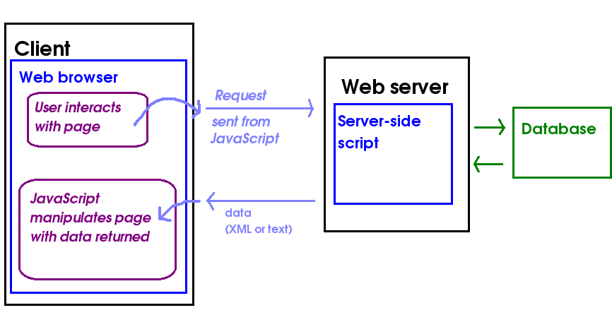

Today we will cover the following topics:
mysql2 APILast year you covered AJAX (Asynchronous JavaScript And XML). You saw that it is an approach to developing highly interactive web applications in which the front-end (JavaScript running client-side in the browser) communicates with a web server in the background, without the page being reloaded. So, with AJAX we can create interactive, instant searches (such as that seen on Google) for example. Your client-side JavaScript code sends a request, and the server sends data back, typically in a pure-data format such as XML or JSON (even though AJAX stands for Asynchronous JavaScript and XML, JSON can also be used). The JSON or XML is then parsed (interpreted) by a second client-side JavaScript function, and the page dynamically updated with the new data.

For example, we could have an AJAX application to search for all products of a given type (e.g cornflakes). Our client-side, front-end JavaScript could send a product type input by the user, such as "Cornflakes", to a Node server, and the Node server could send back JSON containing all the cornflakes manufactured by different manufacturers. Then, a second block of JavaScript wouuld receive the JSON from the server, parse (interpret it) and update the HTML front-end with the data provided in the JSON (all brands of cornflakes available).
How might a user interact with an AJAX application? They might enter a search term in a form and click Go, and then the search results would be sent back from the server as JSON in the background, and one small part of the page only (as opposed to the entire page) updated is with the search results. Furthermore,as requests to the server are sent, and responses received, in the background. So the user can continue to interact with the page while waiting for the response to come back.
AJAX is not an actual language, but a combination of technologies used to produce the effect above. An AJAX application typically consists of three components:
AJAX applications are normally subject to the same-origin policy. This means that the back-end (the server application that the JavaScript talks to) must be delivered from the same exact domain as the front-end. The reason for this is security: the ability for an AJAX front end to talk to a third-party server opens up the possibility of exploits by a malicious AJAX-based website while the user is logged onto a legitimate website. Without the same-origin policy, the malicious AJAX front end could potentially make an AJAX connection to the legitimate website (social media, email, banking, etc) and steal personal data. See the W3C same origin policy document for more detail.
There is, however, a way in which server-side developers can circumvent the same origin policy in certain cases. This is done by explicitly allowing, on the server side, certain, trusted AJAX clients to connect. A common case is where one person owns two domains, and would like the two domains to communicate with each other over AJAX. For example, Solent Holidays might have two domains (note that subdomains are treated as separate domains): hotels.solentholidays.com and booking.solentholidays.com. They might wish to be able to send users' booking details from booking.solentholidays.com to a hotels web API on hotels.solentholidays.com. To do this, they would have to add code to the server on hotels.solentholidays.com to allow booking.solentholidays.com to connect.
This is done by using the technique of Cross-Origin Resource Sharing (CORS). An Access-Control-Allow-Origin headere is added to the HTTP response from the server the header() function, e.g. an HTTP response might contain the header:
Access-Control-Allow-Origin: booking.solentholidays.comwhich would allow the client at booking.solentholidays.com to connect to the script.
To add a CORS header to a Node/Express server, it's easy if you install the cors package:
npm install corsYou just use:
const cors = require('cors');
app.use(cors());
The first few examples will all use this HTML page. They will read in the product type that the user enters, and then use AJAX to request JSON containing details (name, price, manufacturer etc) of that product.
<!DOCTYPE html> <html> <head> <script type='module' src='index.js'></script> </head> <body> <h1>Solent E-Stores: search for products</h1> Product type: <input id='productType' /> <input type='button' id='ajaxButton' value='Search!' /> <br /> <div id='results'></div> </body> </html>
Note the use of
<script type='module' src='index.js'...This loads the script
index.js (see below), and specifies that our JavaScript will be treated as an ECMAScript 6 module. Modules are a recent JavaScript feature which allows development of reusable client-side JavaScript code. From the point of view of this application, making the script a module ensures it is loaded after the page has loaded, which means that document.getElementById() will be able to find the specified elements.
Now we will move on to our client-side JavaScript, index.js. The easiest way to communicate with a server using AJAX is the fetch API. Here is an example of the use of the fetch API.
// index.js - CLIENT SIDE code, runs in the browser
function ajaxSearch(productType) {
fetch(`https://store.example.com/api/product/${productType}`)
.then(response => response.text())
.then(text => {
document.getElementById('results').innerHTML = text;
});
}
// Make the AJAX run when we click a button
document.getElementById('ajaxButton').addEventListener('click', ()=> {
// Read the product type from a text field
const product = document.getElementById('productType').value;
ajaxSearch(product);
});
How is this working?
response.text().We'll now look in a bit more detail at what is going on with our fetch API
request, and in particular look at the concept of a promise. The
fetch call, above, returns a promise object.
A promise is an object which "promises" to do a particular (typically)
asynchronous, background task which will complete at some point in the future,
such as an AJAX request. The fetch() function will return
immediately, but will not do the AJAX request immediately. Instead, it returns
a promise object which will, at some point in the future, be either
fulfilled or rejected. These outcomes are as follows;
then() and
catch() functions. The function supplied as an argument to
then (the resolve function)
will run as soon as the promise is fulfilled
while the function supplied as an argument to catch will run
as soon as the promise is rejected.
So, promises allow you to write code with intuitive, clean syntax in this form:
promise.then(resolveFunction).catch(rejectFunction);where "promise" is the promise object, and
resolveFunction and
rejectFunction are the functions which run on fulfilment and
rejection, respectively.
Note that this topic does not include how to write your own promises from scratch, only how to use promises returned from APIs written by others, for example the fetch API. You can read about how to create your own promises in the advanced notes below.
So, returning to our fetch API example, what is happening with this code in
terms of promises? (Note, I have now added a catch()).
fetch(`https://store.example.com/api/product/${productType}`)
.then(response => response.text())
.then(text => {
document.getElementById('results').innerHTML = text;
})
.catch(e => { alert(`An error occurred: ${e}`); } );
fetch() request. This returns a promise, which
will resolve when we get a response back from the server.response => response.text()as the resolve function. This takes the response and obtains text from it. Note that this is shorthand for:
.then(response => { return response.text(); } );
in other words, if an arrow function only returns a value and does not do
anything else, we can omit the curly brackets and the return.
response.text() does not return the text directly. Perhaps surprisingly, response.text() itself returns a promise, which will fulfil as soon as text is obtained from the response. So, we need yet another then() with a second resolve function (which runs once the text is obtained from the response) passed as an argument, i.e:
.then(text => {
document.getElementById('results').innerHTML = text;
});
This second resolve function gets the text as a parameter, and
simply places this text inside a <div>.catch().The next example will show how we can parse (interpret) the JSON, to make the output more user-friendly.
// index.js - CLIENT SIDE code, runs in the browser
function ajaxSearch(productType) {
// Send a request to our remote URL
const response = fetch(`https://store.example.com/api/product/${productType}`)
.then(response => response.json())
.then(products => {
// Loop through the array of JSON objects and add the results to a <div>
let html = "";
products.forEach ( product => {
html += `Product Name: ${product.name} Manufacturer: ${product.manufacturer} Price: ${product.price}<br />`;
});
document.getElementById('results').innerHTML = html;
});
}
// Make the AJAX run when we click a button
document.getElementById('ajaxButton').addEventListener('click', ()=> {
// Read the product type from a text field
const product = document.getElementById('productType').value;
ajaxSearch(product);
});
This code is very similar to the text-based example. The main difference is
we use response.json() rather than response.text().
This returns a promise which resolves when the JSON in the response has
been parsed (compare response.text(), which returns a promise
which resolves when we have extracted text from the response).
The other diference is that we need to loop through our array of JSON objects returned from the server. The JSON might look like this:
[
{
"name":"Cornflakes",
"manufacturer":"Organic Products Ltd.",
"price": 2.49
},
{
"name":"Cornflakes",
"manufacturer":"Cockadoodle Cereal Co.",
"price": 1.79
},
{
"name":"Cornflakes",
"manufacturer":"Smith Emporium",
"price": 0.79
},
]
Hopefully you can see how we loop through each product object within the JSON,
and extract the name, manufacturer and price fields from the current object. Notice also how forEach() allows us to loop through each member of an array without needing a for loop with an index.
forEach() is a function which performs a second function on each member of an array. Each member of the array in turn is passed into this second function as a parameter.
ECMAScript 8 (aka ECMAScript 2017) introduces async/await.
This allows you to write promise-based,
asynchronous code in a sequential manner. Here is how we would rewrite our
fetch API code using async/await:
// index.js - CLIENT SIDE code, runs in the browser
async function ajaxSearch(productType) {
// Send a request to our remote URL
const response = await fetch(`https://store.example.com/api/product/${productType}`);
// Parse the JSON.
const products = await response.json();
// Loop through the array of JSON objects and add the results to a <div>
let html = "";
products.forEach ( product => {
html += `Product Name: ${product.name} Manufacturer: ${product.manufacturer} Price: ${product.price}<br />`;
});
document.getElementById('results').innerHTML = html;
}
// Make the AJAX run when we click a button
document.getElementById('ajaxButton').addEventListener('click', ()=> {
// Read the product type from a text field
const product = document.getElementById('productType').value;
ajaxSearch(product);
});
Note how we're doing a whole AJAX procedure using sequential
code, even though AJAX is an asynchronous process. The key things are:
ajaxSearch() is declared as async, which makes it a special kind of function (an AsyncFunction)
allowing us to do async/await;fetch() (which if you remember returns a promise to do an
AJAX call) is preceded by await. What await() does is suspend execution of the rest of the async function until the
promise concerned has been fulfilled. The argument to the resolve function of the promise is then returned from the await call.
await calls must be placed in an async function.await will only work with a promise. It's
awaiting the successful resolution of that promise. Trying to use
await without a promise will not work!
To make the code more robust we need to handle errors. Here is how to do this with async/await:
// index.js - CLIENT SIDE code, runs in the browser
async function ajaxSearch(productType) {
try {
// Send a request to our remote URL
const response = await fetch(`https://store.example.com/api/product/${productType}`);
// Parse the JSON.
const products = await response.json();
// Loop through the array of JSON objects and add the results to a <div>
let html = "";
products.forEach ( product => {
html += `Product Name: ${product.name} Manufacturer: ${product.manufacturer} Price: ${product.price}<br />`;
});
document.getElementById('results').innerHTML = html;
} catch (e) {
alert(`There was an error: ${e}`);
}
}
// Make the AJAX run when we click a button
document.getElementById('ajaxButton').addEventListener('click', ()=> {
// Read the product type from a text field
const product = document.getElementById('productType').value;
ajaxSearch(product);
});
Note how we try to do the promise based, asynchronous code and
catch any promise rejections in the catch block. The catch block gets passed the error message accompanying the promise rejection.
These AJAX examples have involved front-end, client-side content, i.e. an HTML page and client-side JavaScript code. How can we get an Express application to serve this content?
You can make Express serve any such static web content (e.g. HTML
pages, images, etc) through the use of the express.static() method, which takes a folder containing the static resources as an argument. A common convention is to place static resources inside a folder called public. So, to make the static resources available via the Express application, you would include the call:
app.use(express.static('public'));
after initialising your Express app. Once you have done this, you can place any static content inside the public folder and the Express server will send it back if it is requested. For example if you have a index.html page inside public, you will be able to request it with (on your local machine)
http://localhost:3000/index.htmlor on a server on the web, such as your Goorm container, something like:
http://my-goorm-node-app.example.com/index.html
You can also send HTTP requests from a Node application to a remote server with the node-fetch package (install with npm install node-fetch). This might be useful, for example, if you need to communicate with a remote web API from your own web application (such as the tourist website communicating with the weather API, which we looked at in Week 1). Here is an example:
// Node.js code
const fetch = require('node-fetch');
const city = 'London';
fetch(`https://api.weather.example.com/city/${city}`)
.then(response => response.json())
.then(json => {
console.log(`The forecast for ${city} is ${json.weather} with max temp ${json.maxtemp} C`);
});
We can also use promises and async/await with the mysql2 API, which can make our code a little easier to understand as it appears more sequential (even though it is still asynchronous!) and we do not use callbacks. Here is an example of using the promise-based version of mysql2:
const express = require('express');
const app = express();
const mysql = require('mysql2/promise');
async function startApp() {
try {
var con = await mysql.createConnection({
host: 'localhost',
user: 'myuser',
password: 'mypass',
database: 'mydb'
});
const conn = await con.connect();
console.log('connected to mysql ok');
app.get('/student/:studentid', async(req, res) => {
try {
const [results,fields] = await con.query(`SELECT * FROM students WHERE studentid=?`, [req.params.studentid]);
res.json(results);
} catch(e) {
res.status(500).json(e);
}
});
app.listen(3000);
} catch(e) {
console.error(`ERROR connecting to database: ${e}`);
}
}
startApp();
Note how:
mysql2 by requiring mysql2/promise.mysql2/promise.
async function, startApp(). As we have seen, await calls can only be done within an async function. So we place all our code in this function and then call it when the application starts.mysql.createConnection() returns a promise which resolves as soon as a successful connection has been made. So we await the resolution of that promise; the promise will resolve with the connection object.await the resolution of con.query(); this again returns a promise which will resolve once we get results from the query. This promise resolves with an array containing two members: an array of matching rows, and an array of fields. Note the use here of JavaScript destructuring syntax:
const [results, fields] = await con.query(...);This is a very powerful JavaScript feature which allows you to "unpack" individual members from an array into individual variables. In this case, we are saying "set
results equal to the first member of the array which the promise resolves with, and set fields equal to the second member of that array".
try/catch, as before, to handle promise rejections. We have two try/catch blocks, one to handle the database connection and one to handle the query taking place in the route.IMPORTANT! Please ensure that you complete last week's exercises up to question 3 first.
Your aim is to develop HitTastic!, a website allowing users to search for, and buy, music. You are going to develop a front-end for HitTastic! and connect it to your Node server that you wrote last week.
public folder, and use express.static() - see above - so that you can access it via your Node server. So, for example, if your file is hittastic.html you would access it with a URL similar to:
https://your-goorm-server.example.com/hittastic.html
public), write an AJAX request function which connects to your /artist API endpoint from topic 2. You should parse the JSON returned. Place the results within the <div>. Remember that you can use innerHTML to fill a page element, e.g:
document.getElementById("div1").innerHTML = "New content!";year property in the JSON, based on the year column in the database) then display "CLASSIC HIT!" in this column.mysql2 promise-based API throughout.<select> box to the front-end. This should contain the options Title, Artist or Year, allowing the user to search on either title, artist or year.
<select id='searchType'> <option>title</option> <option>artist</option> <option>year</option> </select>Next to this
<select>, add another text field, and a button labelled "Search by Type" and connect this to a new JavaScript function. This should read the search type from the select box (you can just use document.getElementById(....).value here, the same as for input boxes) and the search term from the text field, and then make a request to the appropriate API endpoint. You will need to add a new endpoint to your REST API to find all songs released in a given year, as you will not have done this last week.This section gives more information on implementing your own promises. It is provided for your own interest but is not required for the assessment.
To implement your own promise, you need to create a Promise object. A Promise object has an associated task, which is a background
task which may either succeed (fulfilling the promise) or fail (rejecting the promise). This task is implemented as a function which must be passed into the Promise constructor as a parameter. This task function must take two parameters, each of which is themselves a callback function, and each of which was described above:
resolve function (called if the promise is fulfilled)reject function (called if the promise cannot be fulfilled)then() ends up as the resolve function
and the argument to catch() ends up as the reject
function.
The task function must then call these two functions as appropriate,
i.e. if the task succeeds, it must call the resolve function
and if it fails, it must call the reject function.
We are going to illustrate the concept by writing some promises to perform simple mathematical operations.
Here is an example of a promise to perform a division of two numbers. The promise is fulfilled with the result of the division, or rejects if the denominator is zero (remember that division by zero is not allowed). You can write this as Node.js code, or in the browser.
function divide(a,b) {
return new Promise ( (resolve, reject) => {
if(b == 0) {
reject("Cannot divide by zero!");
} else {
resolve(a/b);
}
});
}
Note what we are doing here is writing a function called divide()
which divides two numbers and returns a Promise to do the division.
Note how the Promise constructor
takes, as an argument, a task function which attempts to
carry out the promise. This task function gets passed two parameters, a
resolve function and a reject function, as we saw above. The task function then tests
if the denominator (b)is zero, and if it is, the promise is rejected with
a message "Cannot divide by zero!". Otherwise, the promise is fulfilled and
the resolve function is called, with the result of the division.
To call the promise, we call the function which returns the promise
and chain it with a then() call. then() takes a
function as an argument; this function will run as soon as the promise is
fulfilled. This function corresponds to the resolve parameter to
the Promise constructor. So whatever is passed to then() will
become the resolve parameter of the Promise.
divide(18, 2).then( result => { console.log(result); } );
As we have seen, to handle a promise rejection (e.g. division by zero in the example above), we chain a catch() to our promise call, e.g:
divide(18, 0).then( result => { console.log(result); } ).catch(err => { console.log(err); } );
Note how catch() also takes a function as an argument; this function
corresponds to the reject parameter of the Promise constructor. So
whatever is passed to catch() will become the reject
parameter of the promise.
Promises are frequently chained together. We perform one operation which returns a promise, and then if the promise fulfils, we can call another function, using this form of code:
function1.then(function2).then(function3).catch(e => {
console.log(`Error: ${e}`);
}););
What's this doing? We're calling function 1, which returns a promise.
If the promise fulfils, then we call function2, which also returns a
promise. If that promise fulfils, we call function 3. But if
any of the promises reject, then the catch function will
run and report the error associated with the rejection.
A key, important point about promise chaining is that the value associated with a promise is passed as an argument to the resolve function. For example
function divide(a,b) {
return new Promise ( (resolve, reject) => {
if(b == 0) {
reject("Cannot divide by zero!");
} else {
resolve(a/b);
}
});
}
function squareroot(n) {
return new Promise( (resolve, reject) => {
if(n < 0) {
reject("Cannot square-root a negative number!");
} else {
resolve(Math.sqrt(n));
}
});
}
function countTo(n) {
return new Promise( (resolve, reject) => {
if(n <= 0) {
reject("Cannot count to a number less than 1!");
} else {
for(let i=1; i<=n; i++) {
console.log(i);
}
}
});
We can chain these as follows:
divide(100,4).then(squareroot).then(countTo).catch(e => {
console.log(e);
});
What happens here, exactly?
divide() function returns a
promise, which will be fulfilled with a/b if the denominator is not zero,
and with reject with a "Cannot divide by zero!" message if it is.
divide(). If the promise
succeeds, we run the argument to its then(), which is its
resolve function; here, this will be the squareroot()
function.squareroot() then itself returns a promise, with a
resolve function which receives the square root of the number.
This promise will reject if the number is negative (as we cannot
square root negative numbers... unless we are dealing with imaginary
numbers, which is well out of scope for this subject!)countTo as its argument
to then(), which means that countTo() will be called
if the squareroot promise succeeds.